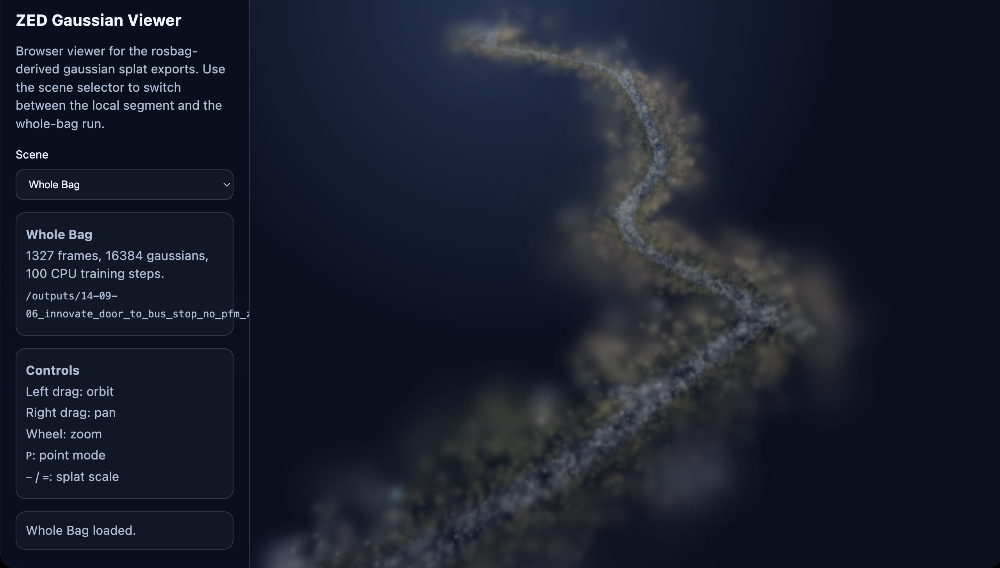

01
Exploration and mapping
Run repeatable autonomous missions for terrain mapping, surface documentation, and site understanding using integrated RGB, thermal, LiDAR, and GNSS/RTK workflows.

Mineral exploration
Tess Space provides autonomous ground vehicles, onboard AI navigation, and mission software for mineral exploration and remote site operations. We support terrain mapping, field surveys, site analytics, robotic logistics, and equipment transport across large, remote, and difficult-to-access environments.
Why Tess Space
Mineral exploration and remote site operations often depend on manual survey work, fragmented sensing workflows, and repeated field deployment across large and difficult terrain. Tess Space provides the autonomy layer that connects robotic mobility, onboard intelligence, mission planning, and sensor payloads into one operational workflow.
From surface mapping and geotagged exploration sensing to remote support tasks and repeatable site missions, our systems are designed to reduce non-productive field effort and improve how data is collected, structured, and acted on.
01
Run repeatable autonomous missions for terrain mapping, surface documentation, and site understanding using integrated RGB, thermal, LiDAR, and GNSS/RTK workflows.
02
Support geological field operations with payload integration, geotagged sensing, and structured robotic workflows across remote and hard-to-access terrain.
03
Turn field missions into actionable outputs such as terrain models, progress tracking, stockpile estimates, and geotagged observations for better operational awareness.
Use cases
Tess Space supports a range of robotic workflows across exploration programs and remote site operations. The same autonomy stack can be adapted to mapping, payload deployment, data capture, and support tasks in environments where manual driving and fragmented field work reduce efficiency.
01
Deploy autonomous UGV missions to map terrain, document remote sites, and build georeferenced surface models for planning, categorization, and exploration support.
02
Integrate exploration-relevant payloads such as thermal cameras, magnetometers, radiometric sensors, and future ground-penetrating radar workflows into a structured robotic mission system.

03
Support traceable field operations with geotagged sample points, mission logging, and linked sensor observations that improve consistency between field activity and recorded site data.

Operational value
Autonomous ground systems are valuable not only for exploration sensing, but also for recurring operational workflows across large and distributed sites. Tess Space helps reduce wasted movement, improve repeatability, and support field teams working far from base.
04
Generate repeatable field data for 3D site models, progress tracking, change detection, and stockpile volume estimation across evolving operational areas.

05
Deliver tools, spare parts, and essential equipment across large sites with autonomous or supervised UGV missions. This helps reduce long return trips, supports field teams working far from base, and keeps operations moving in difficult terrain.

06
Tess Space provides the sensing, navigation, and mission supervision foundation that can support more advanced autonomy workflows for larger mobile assets over time.

Partners


Video preview